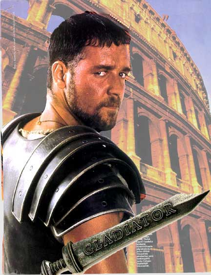

Forums galactiques > Taverne galactique : lieu de discussion informel > Carambar party
Pages : 1 2 ... 31 32 33 34 35
| Firefly Réputation à la taverne : 106  19/03 ETU 15:38 | Score : 1 Détails Beth, tu devrais avoir honte de toi! Goujat! Je m'en vais!
Euh non Kailee, la tu te dirige vers le placard! Ouai ben, tu dira à Beth que je ne veux plus le revoir. Je crois que là il t'a entendu... BYE! Vous connaissez la blague sur la girafe? Ben moi non plus... | ||
| Beth le cerf blanc Réputation à la taverne : 112  19/03 ETU 19:19 | Score : 2 Détails "Attend Kailee!Non!Roooh allez!Je t'ai déja raconté la blague des céréales!?Non?Pas de bol..."
| ||
| Dark Dead Réputation à la taverne : 27  19/03 ETU 20:35 | Score : 0 Détails Et il continue !!
| ||
| Beth le cerf blanc Réputation à la taverne : 112 19/03 ETU 21:25 | Score : -1 Détails "Non pas un plus!Bouhouhou...et non Kailee part pas!Rebouhouhou..."
Je vais me pendre...celui qui le veut qu'il me moinsse! | ||
| Firefly Réputation à la taverne : 106 20/03 ETU 05:51 | Score : 1 Détails Beth, elle me dit de te dire qu'elle ne veut plus t'adresser la parole. Et si tu veux connaitre la raison, c'est parce qu'elle trouve qu'en ce moment non seulement tu ne t'occupes plus d'elle, mais en plus de cela tu te saoules. Elle te dit aussi que bientot elle ne se servira même plus de moi comme biais.
... C'est l'histoire d'un mécanicien dans un bus publique. Vient une belle blonde à forte poitrine, évidemment, le bus est rempli. Il se lève et propose ainsi la place à la dame, mais celle-ci refuse. Après quelques secondes ils trouvent un bon compromis. La femme s'assit sur l'homme. - Madame, vous êtes secrétaire non? - Oui, comment vous le savez? - Depuis tout à l'heure vos doigts n'ont de cesse de bouger. La femme fut un peu génée, et pour embarasser l'homme, elle lui posa à son tour une question: - Vous êtes mécanicien, n'est-ce pas? - Oui, comment vous le savez? - Depuis tout à l'heure votre essuie-glace monte et redescends. ... | ||
| Mistermore Réputation à la taverne : 550  20/03 ETU 22:48 | Score : 0 Détails "Ce soir vous serez ce qu'un commerçant de la galaxie dit à son fils avant son mariage"
Ceci est une histoire qu'un ami commerçant m'a raconté. Cela s'appelle dans le jargon commerçant "Les cinq doigts" Un riche commerçant de la galaxie va marier son fils.je garde son nom secret, je veux pas avoir de problème La veille des noces, il prend le jeune homme à part pour une conversation en tête à tête. Krathos, non, non,non oubliez ce que je viens de dire « mon fils, je réalise que je ne t’ai jamais parlé de la vie, etc. … saches certaines choses. Tiens, tu connais les doigts de la main ? » « Mais bien sûr papa, il y a le pouce, l’index, le majeur. . . » « Non ! Non ! Ce n’est pas ça ! Il y a le doigt du voyage, le doigt de la direction, le doigt de la jouissance, le doigt du mariage et enfin, le doigt de la distinction. » « Ah bon ! ». « Je t’explique. Le doigt du voyage c’est le pouce parce qu’il permet de faire de l’ auto-stop ». « D’accord papa ». « Le doigt de la direction c’est l’index parce que c’est celui que tu prends quand tu veux montrer quelque chose » « Ok ». « Le doigt du mariage c’est l’annulaire parce que c’est là que tu vas passer ton alliance ». « Oui papa ! ». « Et le doigt de la distinction c’est l’auriculaire, parce qu’il faut le lever quand on boit une tasse de thé ». « Compris papa ! Mais tu as oublié le doigt de la jouissance » ! « Je gardais le meilleur pour la fin mon fils ! Le doigt de la jouissance c’est le majeur. C’est le plus beau et le plus long! Pour la jouissance mon fils, tu mouilles ce doigt dans ta bouche et . . . . . . tu comptes tes billets » ! ! ! Tous ceux et celles qui ont pensé autre chose, à genoux et récitez 3 « Je vous salue Marie ». Bonne nuit ! | ||
| Chasseur de Borgs Réputation à la taverne : 43  21/03 ETU 12:16 | Score : 2 Détails S'agenouille...
Notre bière qui êtes au frais Que notre demi soit versé Que notre volonté soit faite Au bar comme au comptoir Pardonnez-nous nos gueules de bois Comme nous pardonnons A ceux qui boivent du Coca Soumets-nous au demi pression Et délivre-nous de la soif Amen ton pack Une fois, ça suffit ^^ | ||
| Retoris Réputation à la taverne : 237  21/03 ETU 13:15 | Score : 1 Détails Allez une petite blague digne du CPVP...
Connaissez-vous l'histoire de Paf le chien? C'est un chien qui traverse la route et PAF le chien! | ||
| Chasseur de Borgs Réputation à la taverne : 43 21/03 ETU 13:20 | Score : 1 Détails Et celle de Flap-flap, la girafe ?
C'est une girafe et un hélicoptère passe et FLAP-FLAP la girafe... | ||
| Retoris Réputation à la taverne : 237 21/03 ETU 13:28 | Score : 1 Détails Et celle de Florp le bison?
Au temps des westerns, il y a un bison qui traverse le chemin de fer et FLORP le bison! | ||
| Chasseur de Borgs Réputation à la taverne : 43 21/03 ETU 18:06 | Score : 0 Détails J'aurais plutôt dit Florp le train, car un bison, c'est toujours en groupe...
| ||
| Retoris Réputation à la taverne : 237 23/03 ETU 19:06 | Score : 0 Détails Le jeu HRP m'a rappelé cette blague :
Qu'est-ce qu'une blonde avec une mèche brune? - -- --- --- ---- ----- ------ ------- -------- ----------- ----------------- ------------------------ ------------------------------- ---------------------------------- --------------------------------------------- --------------------------------------------------- [indice de supence par commendants] Une lueur d'éspoire! | ||
| Chasseur de Borgs Réputation à la taverne : 43 23/03 ETU 20:23 | Score : 0 Détails Mais non, c'est de l'intelligence artificielle !
| ||
| Dark Dead Réputation à la taverne : 27 23/03 ETU 20:27 | Score : 0 Détails 'pareil :
Pourquoi l'homme a-t-il inventer l'intelligence artificielle ? Pour qu'elle depasse son créateur et l'aide car l'homme est un peu con. | ||
| Mirade Réputation à la taverne : 57  24/03 ETU 16:19 | Score : 1 Détails Attention, vous êtes prévenus, la blague qui va suivre est très... enfin je crois que je vais sortir très vite à la fin ^^
C'est un chameau qui entre dans une boulangerie imaginez déjà un chameau qui fait ça... et qui demande une baguette de pain. Le boulanger lui répond : "désolé, on ne vend pas de ça ici ! - C'est pas grave, je suis venu à bicyclette !" C'est bon, je suis dehors !!! Pour ceux qui y ont rien compris, ne vous inquiétez pas, c'est normal : il n'y a rien a comprendre ! | ||
| Beth le cerf blanc Réputation à la taverne : 112 25/03 ETU 10:35 | Score : -3 Détails C'est deux hommes qui se rencontrent dans la rue et qui se disent bonjour.
"Bonjour!" "Bonjour..." Hahahahahaha!Elle est tordante n'est-ce pas! (Encore 1 moins!) | ||
| Larry Winthorpe Réputation à la taverne : 2277  25/03 ETU 10:42 | Score : 0 Détails Un kangourou rentre dans un bar.
Le patron, un peu étonné, fait comme si de rien n'était et lui demande ce qu'il désire. "Un Coca, s'il vous plaît !" Le patron lui sert son Coca. "Voilà, ça vous fait 300 leems." Le kangourou prend un air un peu étonné, mais sort de sa poche avant 300 leems et les tend au barman. Et puis, de plus en plus intrigué, le barman se permet de l'interroger un peu. "Et ben dites donc, heu... c'est quand même pas tous les jours qu'on voit un kangourou dans ce bar boire un coca ! -Ha ! Normal ! A 300 leems le Coca, ça vous étonne, vous ?" | ||
| Retoris Réputation à la taverne : 237 25/03 ETU 10:43 | Score : 0 Détails Beth vous venez d'atteindre votre objectif.
Sinon dans le même style que celle de Beth : C'est l'histoire d'un homme qui marche dans la rue. Arrivé au milieu de la rue, il rentre dans une maison. | ||
| Mirade Réputation à la taverne : 57 25/03 ETU 11:59 | Score : 1 Détails Deux girafes tricotent dans un arbre.
Au bout de quelques minutes, elles voient un éléphant qui passe en volant à côté d'elles FLAP FLAP FLAP Elles le regardent passer sans rien dire, puis se remettent à leur tricot. Quelques secondes plus tard, un deuxième éléphant volant passe FLAP FLAP FLAP Une des girafes se tourne vers l'autre : "Il doit y avoir un nid quelque part" | ||
| guigui2208 Réputation à la taverne : 7  01/04 ETU 11:28  | Score : 0 Détails Un employé demande à son patron :
- Chef, pourrais-je quitter le bureau trois heures plus tôt, pour pouvoir aller faire du shopping avec ma femme ? - Il n'en est pas question ! - Merci, Chef. Je savais que vous ne me laisseriez pas tomber. ------------------------------------------------------------ Quels sont les points communs entre une paire de lunettes et une femme ? - Il faut que les pattes soient bien écartées pour qu'on puisse les mettre. Mais ce n'est pas tout : - Les deux peuvent être à double foyer. - On peut dire aussi que les deux sont de bonnes montures. - On peut les traiter de vieille branche. - Les deux vous prennent la tête. - On peut aimer quand elles sont bien rondes, mais pas trop quand elles sont épaisses. - Elles nous en mettent plein la vue, - Elles nous en font voir de toutes les couleurs. - On aimerait que les deux soient remboursées par la sécurité sociale. - Elles nous mènent par le bout du nez. - On n'est pas toujours content quand elles se cassent. |
Pages : 1 2 ... 31 32 33 34 35
Forums galactiques > Taverne galactique : lieu de discussion informel > Carambar party